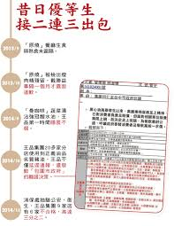
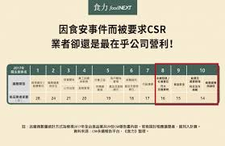

首頁
台灣一直未能妥善解決食安問題，消費者只能邊吃邊罵。問及「哪種類型食品您覺得最不能放心食用？」，民眾對於各類加工食品的不信任度分佈相當平均，介乎30%～37%，最不信任的品項依序為蔬果加工、食用油、水產食品、調味品、烘焙食品以及肉品。據《食力》總計，2013至2017年台灣至少發生113起食安事件，即平均一個月食安出包1.83次，而且問題食品範圍極廣，所有產品種類無一倖免，民眾難免生起「到底有什麼能吃」的疑惑。

其中信任度最低的品項是蔬果加工（37%）和食用油（36.8%），前者經常出現農藥殘留超標的問題，後者更是引發食安風暴的主角，繼2013年大統長基混油事件，翌年多家食用油廠商被揭發違規經營，包括當年最轟動的強冠劣油案，重創民眾對國產食用油乃至整條食品供應鏈的信任，到現在尚未恢復。

連到第一頁
連到第三頁
連到第四頁
連到第五頁